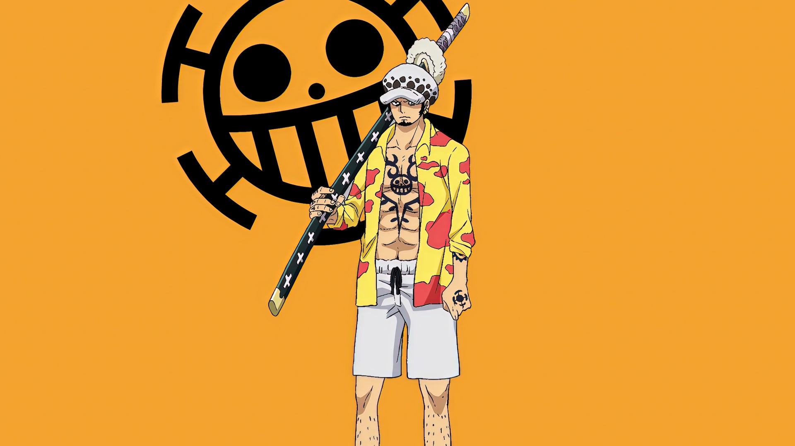

Trafalgar D. Water Law, more commonly known as just Trafalgar Law (トラファルガー・ロー, Torafarugā Rō?) and by his epithet as the "Surgeon of Death", is a pirate from the North Blue and the captain and doctor of the Heart Pirates. He is one of twelve pirates who are referred to as the "Worst Generation".[1][17] He became one of the Seven Warlords of the Sea during the timeskip, but his position was revoked for allying with the Straw Hat Pirates. Law, like many other pirates, dreams of finding the One Piece, while also desiring to know the purpose of the Will of D.
Read More On One Piece Wiki